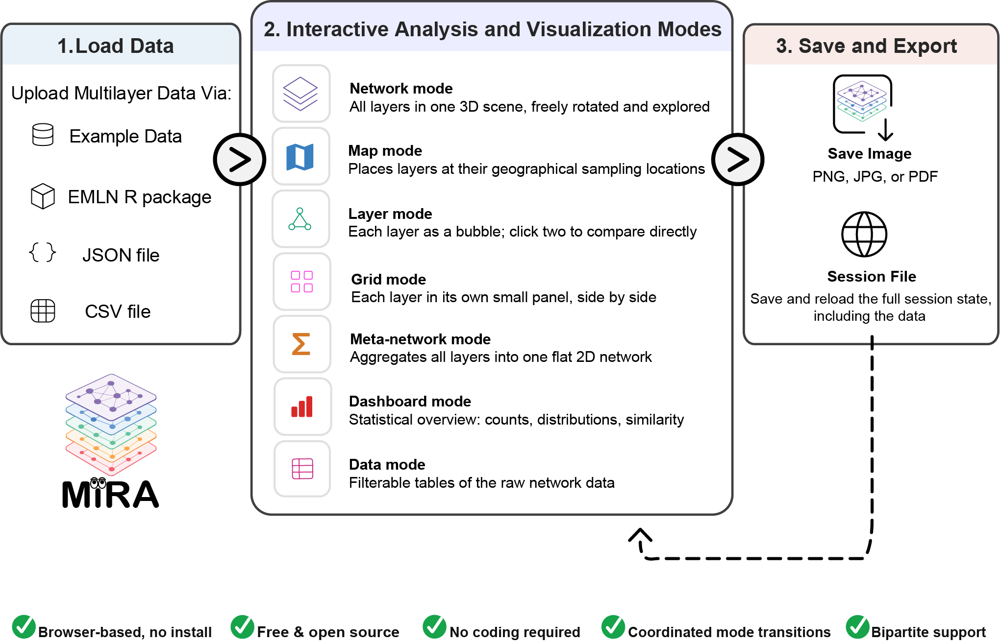
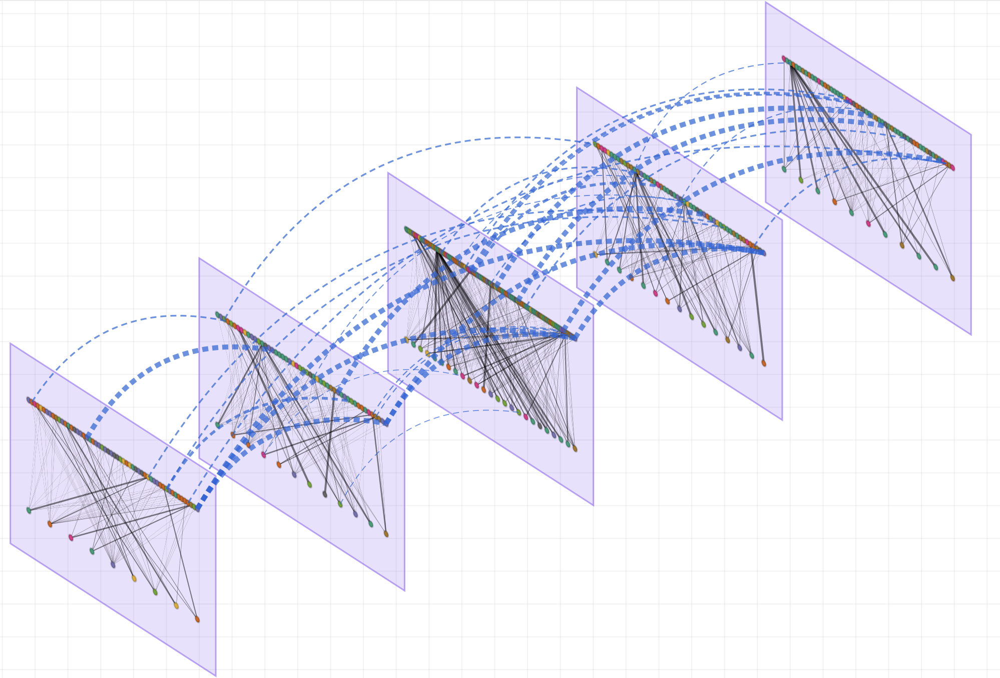

MiRA (Multilayer Interactive Rendering Application) is a free, browser-based, installation-free tool for interactive visualization of multilayer networks in ecology and biology — multiplex, temporal, spatial, and bipartite. Other tools each cover a piece; MiRA brings the whole picture together.
No sign-up — runs in your browser.
Load a multilayer network, explore it through seven linked modes, and save the result — all in the browser, without installing anything or writing code.

Each mode provides a different perspective about the same network. MiRA is the only tool that offers all of them — and switches between them in a single click, keeping your selection, color, and filtering choices intact across every view.
All layers in one 3D space — rotate, pan, and drag to explore structure.
Layers pinned to their real geographic coordinates on an interactive world map.
Each layer as a force-directed bubble, with side-by-side comparison panels.
Small multiples — one panel per layer, side by side for direct comparison.
Aggregate cross-layer structure into a single monolayer graph.
Charts, presence matrices, similarity heatmaps, and degree distributions.
Inspect, filter, and subset the underlying node, link, and layer tables.
| Multilayer-native | Runs in browser | No coding | Interactive | Bipartite | Geographic | 7 linked modes | |
|---|---|---|---|---|---|---|---|
| MiRA | |||||||
| muxViz | |||||||
| Arena3Dweb | |||||||
| pymnet | |||||||
| BiMultiNetPlot | |||||||
| Gephi | |||||||
| Cytoscape |
Several tools for multilayer visualization exist, but none combines the full set of features ecological research needs. muxViz is an established analysis tool, but it runs in R, offers no interactive browser interface, and does not support bipartite networks. BiMultiNetPlot fills the bipartite gap yet produces only static figures with no built-in analysis. Arena3Dweb offers polished interactive 3D, but was designed for biomedical networks — without bipartite or geographic layouts, or multiple linked views. General-purpose tools such as Gephi and Cytoscape are not multilayer-native. Each covers only a fragment of what ecological multilayer visualization requires, which is the gap MiRA fills. See each tool's docs for current features.
Follow a short walkthrough with a bundled empirical dataset — no setup required.
Visualize a bipartite plant–pollinator multilayer network.
Place network layers on a geographic map with Map Mode.
Track how interactions change across seasons in a temporal network.
Explore a multilayer human brain connectome — beyond ecology.

A multilayer network is composed of a set of layers (each is a network), which represent different states of the entire system, such as different kinds of interactions, spatial locations or temporal time points. The layers are a single linked structure via interlayer links, rather than collapsed into a single graph. MiRA visualizes all of these — see the visualization modes in the manual.
Yes. MiRA is free and open source under the CC BY-NC-SA 4.0 license, runs in any modern web browser, and requires no account or sign-up. See License & Attribution in the manual.
No. MiRA is entirely point-and-click in the browser. If you work in R, you can also plot directly from the emln package — see emln integration in the manual — but coding is optional.
Yes. MiRA has a dedicated bipartite layout that draws the two node sets — for example pollinators and plants — in separate rows. Mark a layer as bipartite in your data and MiRA lays it out automatically; see bipartite layers in the manual, or the plant–pollinator walkthrough.
MiRA reads JSON or CSV (an extended edge list plus optional layer, node, and state-node attribute files), or a network passed directly from the emln R package. See the data format guide or the manual's import section.
Each of the existing tools covers part of what multilayer visualization needs. For example, muxViz and pymnet are focused on analysis, Arena3Dweb for biomedical 3D scenes, and Gephi and Cytoscape for general single-layer graphs. MiRA is the only browser-based, no-code tool that combines bipartite and geographic support with seven linked visualization modes.
Cite the preprint: Nehoray, Bloch & Pilosof (2026), Interactively visualizing biological multilayer networks using MiRA, arXiv:2605.09597. To cite the software itself, use the Zenodo DOI 10.5281/zenodo.22096810.
Load a built-in example in seconds, or bring your own data as JSON or CSV — or plot straight from the emln R package.
If MiRA helped you explore your networks or produce figures for your research, please cite the preprint:
Nehoray, S. M., Bloch, Y., & Pilosof, S. (2026). Interactively visualizing biological multilayer networks using MiRA. arXiv:2605.09597. https://arxiv.org/abs/2605.09597
To cite the software itself (archived release), use the Zenodo DOI:
Nehoray, S. M., Bloch, Y., & Pilosof, S. (2026). MiRA — Multilayer Interactive Rendering Application (v1.1). Zenodo. https://doi.org/10.5281/zenodo.22096810
MiRA is developed by the Ecological Complexity Lab at Ben-Gurion University of the Negev.